<!DOCTYPE html>
<html class="writer-html5" lang="en" >
<head>
  <meta charset="utf-8" /><meta name="generator" content="Docutils 0.17.1: http://docutils.sourceforge.net/" />

  <meta name="viewport" content="width=device-width, initial-scale=1.0" />
  <title>Clustering Propagation Snapshots &mdash; DenMune 0.1 documentation</title>
      <link rel="stylesheet" href="../_static/pygments.css" type="text/css" />
      <link rel="stylesheet" href="../_static/css/theme.css" type="text/css" />
  <!--[if lt IE 9]>
    <script src="../_static/js/html5shiv.min.js"></script>
  <![endif]-->
  
        <script data-url_root="../" id="documentation_options" src="../_static/documentation_options.js"></script>
        <script src="../_static/jquery.js"></script>
        <script src="../_static/underscore.js"></script>
        <script src="../_static/doctools.js"></script>
    <script src="../_static/js/theme.js"></script>
    <link rel="index" title="Index" href="../genindex.html" />
    <link rel="search" title="Search" href="../search.html" />
    <link rel="next" title="Scalability" href="scalability_and_speed.html" />
    <link rel="prev" title="Clustering Propagation" href="clustering_propagation.html" /> 
</head>

<body class="wy-body-for-nav"> 
  <div class="wy-grid-for-nav">
    <nav data-toggle="wy-nav-shift" class="wy-nav-side">
      <div class="wy-side-scroll">
        <div class="wy-side-nav-search" >
            <a href="../index.html" class="icon icon-home"> DenMune
          </a>
              <div class="version">
                0.1.0
              </div>
<div role="search">
  <form id="rtd-search-form" class="wy-form" action="../search.html" method="get">
    <input type="text" name="q" placeholder="Search docs" />
    <input type="hidden" name="check_keywords" value="yes" />
    <input type="hidden" name="area" value="default" />
  </form>
</div>
        </div><div class="wy-menu wy-menu-vertical" data-spy="affix" role="navigation" aria-label="Navigation menu">
              <ul>
<li class="toctree-l1"><a class="reference internal" href="../README.html">DenMune: A density-peak clustering algorithm</a></li>
<li class="toctree-l1"><a class="reference internal" href="../README.html#installation-and-usage">Installation and Usage</a></li>
<li class="toctree-l1"><a class="reference internal" href="../README.html#loading-data">Loading data</a></li>
<li class="toctree-l1"><a class="reference internal" href="../README.html#algorithm-s-parameters">Algorithm’s Parameters</a></li>
<li class="toctree-l1"><a class="reference internal" href="../README.html#features">Features</a></li>
<li class="toctree-l1"><a class="reference internal" href="../README.html#how-to-run-and-test">How to Run and Test</a></li>
<li class="toctree-l1"><a class="reference internal" href="../README.html#how-to-cite">How to cite</a></li>
</ul>
<ul>
<li class="toctree-l1"><a class="reference internal" href="../examples/iris_dataset.html">Iris Dataset</a></li>
<li class="toctree-l1"><a class="reference internal" href="../examples/chameleon_datasets.html">Chameleon Dataset</a></li>
<li class="toctree-l1"><a class="reference internal" href="../examples/2D_shapes_datasets.html">2D Shapes Datasets</a></li>
<li class="toctree-l1"><a class="reference internal" href="../examples/MNIST_dataset.html">MNIST Dataset</a></li>
</ul>
<ul class="current">
<li class="toctree-l1"><a class="reference internal" href="noise_detection.html">Noise Detection</a></li>
<li class="toctree-l1"><a class="reference internal" href="clustering_propagation.html">Clustering Propagation</a></li>
<li class="toctree-l1 current"><a class="current reference internal" href="#">Clustering Propagation Snapshots</a></li>
<li class="toctree-l1"><a class="reference internal" href="scalability_and_speed.html">Scalability</a></li>
<li class="toctree-l1"><a class="reference internal" href="stability_vs_knn.html">Stability</a></li>
<li class="toctree-l1"><a class="reference internal" href="k_nearest_evolution.html">K-nearest Neighbor Evolution</a></li>
</ul>
<ul>
<li class="toctree-l1"><a class="reference internal" href="../kaggle/validation.html">Validate Your Results</a></li>
<li class="toctree-l1"><a class="reference internal" href="../kaggle/training_MNIST.html">Trining MNIST Dataset</a></li>
<li class="toctree-l1"><a class="reference internal" href="../kaggle/Get_97_by_training_MNIST_dataset.html">Become a Kaggler: Get 97% on MNIST Dataset</a></li>
</ul>

        </div>
      </div>
    </nav>

    <section data-toggle="wy-nav-shift" class="wy-nav-content-wrap"><nav class="wy-nav-top" aria-label="Mobile navigation menu" >
          <i data-toggle="wy-nav-top" class="fa fa-bars"></i>
          <a href="../index.html">DenMune</a>
      </nav>

      <div class="wy-nav-content">
        <div class="rst-content">
          <div role="navigation" aria-label="Page navigation">
  <ul class="wy-breadcrumbs">
      <li><a href="../index.html" class="icon icon-home"></a> &raquo;</li>
      <li>Clustering Propagation Snapshots</li>
      <li class="wy-breadcrumbs-aside">
            <a href="../_sources/characteristics/clustering_propagation_snapshots.rst.txt" rel="nofollow"> View page source</a>
      </li>
  </ul>
  <hr/>
</div>
          <div role="main" class="document" itemscope="itemscope" itemtype="http://schema.org/Article">
           <div itemprop="articleBody">
             
  <section id="clustering-propagation-snapshots">
<h1>Clustering Propagation Snapshots<a class="headerlink" href="#clustering-propagation-snapshots" title="Permalink to this headline"></a></h1>
<div class="highlight-python notranslate"><div class="highlight"><pre><span></span><span class="kn">import</span> <span class="nn">pandas</span> <span class="k">as</span> <span class="nn">pd</span>
<span class="kn">import</span> <span class="nn">time</span>
<span class="kn">import</span> <span class="nn">os.path</span>
<span class="kn">import</span> <span class="nn">glob</span>

<span class="kn">import</span> <span class="nn">warnings</span>
<span class="n">warnings</span><span class="o">.</span><span class="n">filterwarnings</span><span class="p">(</span><span class="s1">&#39;ignore&#39;</span><span class="p">)</span>
</pre></div>
</div>
<div class="highlight-python notranslate"><div class="highlight"><pre><span></span># install DenMune clustering algorithm using pip command from the offecial Python repository, PyPi
# from https://pypi.org/project/denmune/
!pip install denmune

# then import it
from denmune import DenMune
</pre></div>
</div>
<div class="highlight-python notranslate"><div class="highlight"><pre><span></span># clone datasets from our repository datasets
if not os.path.exists(&#39;datasets&#39;):
  !git clone https://github.com/egy1st/datasets
</pre></div>
</div>
<div class="highlight-default notranslate"><div class="highlight"><pre><span></span>Cloning into &#39;datasets&#39;...
remote: Enumerating objects: 52, done.
remote: Counting objects: 100% (52/52), done.
remote: Compressing objects: 100% (43/43), done.
remote: Total 52 (delta 8), reused 49 (delta 8), pack-reused 0
Unpacking objects: 100% (52/52), done.
</pre></div>
</div>
<div class="highlight-python notranslate"><div class="highlight"><pre><span></span><span class="c1">#@title  { run: &quot;auto&quot;, vertical-output: true, form-width: &quot;50%&quot; }</span>
<span class="n">dataset</span> <span class="o">=</span> <span class="s2">&quot;t7.10k&quot;</span> <span class="c1">#@param [&quot;t4.8k&quot;, &quot;t5.8k&quot;, &quot;t7.10k&quot;, &quot;t8.8k&quot;]</span>
<span class="n">show_noize_checkbox</span> <span class="o">=</span> <span class="kc">True</span> <span class="c1">#@param {type:&quot;boolean&quot;}</span>
<span class="n">data_path</span> <span class="o">=</span> <span class="s1">&#39;datasets/denmune/chameleon/&#39;</span>

<span class="c1"># train file</span>
<span class="n">data_file</span> <span class="o">=</span> <span class="n">data_path</span> <span class="o">+</span> <span class="n">dataset</span> <span class="o">+</span><span class="s1">&#39;.csv&#39;</span>
<span class="n">X_train</span> <span class="o">=</span> <span class="n">pd</span><span class="o">.</span><span class="n">read_csv</span><span class="p">(</span><span class="n">data_file</span><span class="p">,</span> <span class="n">sep</span><span class="o">=</span><span class="s1">&#39;,&#39;</span><span class="p">,</span> <span class="n">header</span><span class="o">=</span><span class="kc">None</span><span class="p">)</span>
</pre></div>
</div>
<div class="highlight-python notranslate"><div class="highlight"><pre><span></span><span class="kn">from</span> <span class="nn">itertools</span> <span class="kn">import</span> <span class="n">chain</span>

<span class="c1"># Denmune&#39;s Paramaters</span>
<span class="n">knn</span> <span class="o">=</span> <span class="mi">39</span> <span class="c1"># number of k-nearest neighbor, the only parameter required by the algorithm</span>

<span class="c1"># create list of differnt snapshots of the propagation</span>
<span class="n">snapshots</span> <span class="o">=</span> <span class="n">chain</span><span class="p">([</span><span class="mi">0</span><span class="p">],</span> <span class="nb">range</span><span class="p">(</span><span class="mi">2</span><span class="p">,</span><span class="mi">5</span><span class="p">),</span> <span class="nb">range</span><span class="p">(</span><span class="mi">5</span><span class="p">,</span><span class="mi">50</span><span class="p">,</span><span class="mi">5</span><span class="p">),</span> <span class="nb">range</span><span class="p">(</span><span class="mi">50</span><span class="p">,</span> <span class="mi">100</span><span class="p">,</span> <span class="mi">10</span><span class="p">),</span> <span class="nb">range</span><span class="p">(</span><span class="mi">100</span><span class="p">,</span><span class="mi">500</span><span class="p">,</span><span class="mi">50</span><span class="p">),</span> <span class="nb">range</span><span class="p">(</span><span class="mi">500</span><span class="p">,</span><span class="mi">1000</span><span class="p">,</span> <span class="mi">100</span><span class="p">),</span> <span class="nb">range</span><span class="p">(</span><span class="mi">1000</span><span class="p">,</span><span class="mi">3000</span><span class="p">,</span> <span class="mi">250</span><span class="p">),</span><span class="nb">range</span><span class="p">(</span><span class="mi">3000</span><span class="p">,</span><span class="mi">5500</span><span class="p">,</span><span class="mi">500</span><span class="p">))</span>

<span class="kn">from</span> <span class="nn">IPython.display</span> <span class="kn">import</span> <span class="n">clear_output</span>
<span class="k">for</span> <span class="n">snapshot</span> <span class="ow">in</span> <span class="n">snapshots</span><span class="p">:</span>
    <span class="nb">print</span> <span class="p">(</span><span class="s2">&quot;itration&quot;</span><span class="p">,</span> <span class="n">snapshot</span> <span class="p">)</span>
    <span class="c1">#clear_output(wait=True)</span>
    <span class="n">dm</span> <span class="o">=</span> <span class="n">DenMune</span><span class="p">(</span><span class="n">train_data</span><span class="o">=</span><span class="n">X_train</span><span class="p">,</span> <span class="n">k_nearest</span><span class="o">=</span><span class="n">knn</span><span class="p">,</span> <span class="n">rgn_tsne</span><span class="o">=</span><span class="kc">False</span><span class="p">,</span> <span class="n">prop_step</span><span class="o">=</span><span class="n">snapshot</span><span class="p">)</span>
    <span class="n">labels</span><span class="p">,</span> <span class="n">validity</span> <span class="o">=</span> <span class="n">dm</span><span class="o">.</span><span class="n">fit_predict</span><span class="p">(</span><span class="n">show_analyzer</span><span class="o">=</span><span class="kc">False</span><span class="p">,</span> <span class="n">show_noise</span><span class="o">=</span><span class="kc">False</span><span class="p">)</span>
</pre></div>
</div>
<div class="highlight-default notranslate"><div class="highlight"><pre><span></span><span class="n">itration</span> <span class="mi">0</span>
</pre></div>
</div>

<div class="highlight-default notranslate"><div class="highlight"><pre><span></span><span class="n">itration</span> <span class="mi">2</span>
</pre></div>
</div>

<div class="highlight-default notranslate"><div class="highlight"><pre><span></span><span class="n">itration</span> <span class="mi">3</span>
</pre></div>
</div>
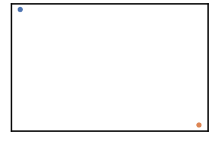
<div class="highlight-default notranslate"><div class="highlight"><pre><span></span><span class="n">itration</span> <span class="mi">4</span>
</pre></div>
</div>
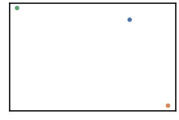
<div class="highlight-default notranslate"><div class="highlight"><pre><span></span><span class="n">itration</span> <span class="mi">5</span>
</pre></div>
</div>
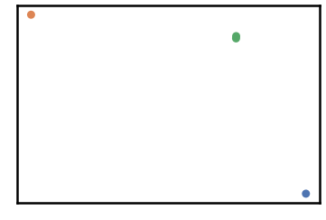
<div class="highlight-default notranslate"><div class="highlight"><pre><span></span><span class="n">itration</span> <span class="mi">10</span>
</pre></div>
</div>
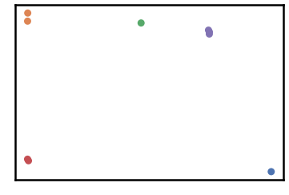
<div class="highlight-default notranslate"><div class="highlight"><pre><span></span><span class="n">itration</span> <span class="mi">15</span>
</pre></div>
</div>

<div class="highlight-default notranslate"><div class="highlight"><pre><span></span><span class="n">itration</span> <span class="mi">20</span>
</pre></div>
</div>

<div class="highlight-default notranslate"><div class="highlight"><pre><span></span><span class="n">itration</span> <span class="mi">25</span>
</pre></div>
</div>
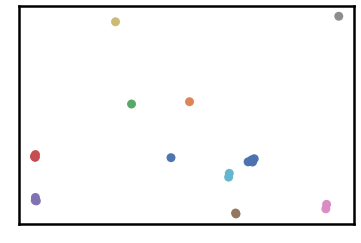
<div class="highlight-default notranslate"><div class="highlight"><pre><span></span><span class="n">itration</span> <span class="mi">30</span>
</pre></div>
</div>
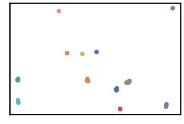
<div class="highlight-default notranslate"><div class="highlight"><pre><span></span><span class="n">itration</span> <span class="mi">35</span>
</pre></div>
</div>
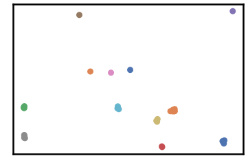
<div class="highlight-default notranslate"><div class="highlight"><pre><span></span><span class="n">itration</span> <span class="mi">40</span>
</pre></div>
</div>

<div class="highlight-default notranslate"><div class="highlight"><pre><span></span><span class="n">itration</span> <span class="mi">45</span>
</pre></div>
</div>
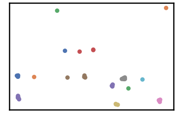
<div class="highlight-default notranslate"><div class="highlight"><pre><span></span><span class="n">itration</span> <span class="mi">50</span>
</pre></div>
</div>
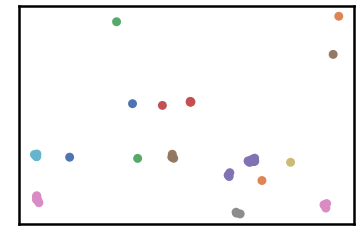
<div class="highlight-default notranslate"><div class="highlight"><pre><span></span><span class="n">itration</span> <span class="mi">60</span>
</pre></div>
</div>

<div class="highlight-default notranslate"><div class="highlight"><pre><span></span><span class="n">itration</span> <span class="mi">70</span>
</pre></div>
</div>
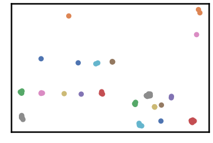
<div class="highlight-default notranslate"><div class="highlight"><pre><span></span><span class="n">itration</span> <span class="mi">80</span>
</pre></div>
</div>
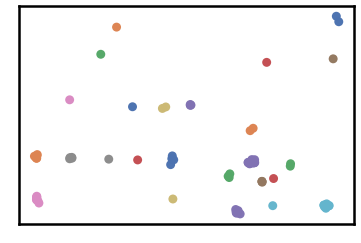
<div class="highlight-default notranslate"><div class="highlight"><pre><span></span><span class="n">itration</span> <span class="mi">90</span>
</pre></div>
</div>
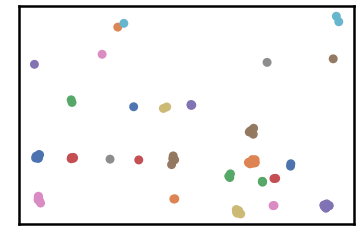
<div class="highlight-default notranslate"><div class="highlight"><pre><span></span><span class="n">itration</span> <span class="mi">100</span>
</pre></div>
</div>
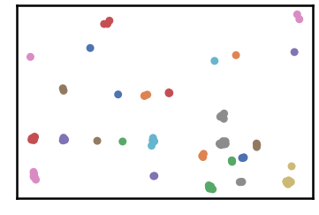
<div class="highlight-default notranslate"><div class="highlight"><pre><span></span><span class="n">itration</span> <span class="mi">150</span>
</pre></div>
</div>

<div class="highlight-default notranslate"><div class="highlight"><pre><span></span><span class="n">itration</span> <span class="mi">200</span>
</pre></div>
</div>

<div class="highlight-default notranslate"><div class="highlight"><pre><span></span><span class="n">itration</span> <span class="mi">250</span>
</pre></div>
</div>
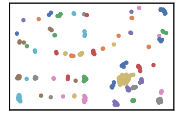
<div class="highlight-default notranslate"><div class="highlight"><pre><span></span><span class="n">itration</span> <span class="mi">300</span>
</pre></div>
</div>
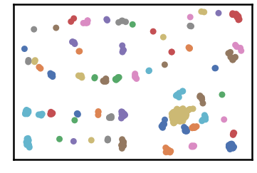
<div class="highlight-default notranslate"><div class="highlight"><pre><span></span><span class="n">itration</span> <span class="mi">350</span>
</pre></div>
</div>
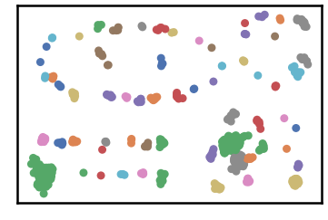
<div class="highlight-default notranslate"><div class="highlight"><pre><span></span><span class="n">itration</span> <span class="mi">400</span>
</pre></div>
</div>
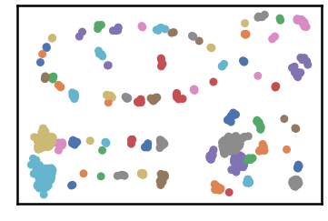
<div class="highlight-default notranslate"><div class="highlight"><pre><span></span><span class="n">itration</span> <span class="mi">450</span>
</pre></div>
</div>
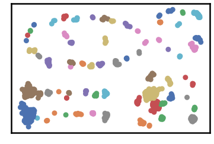
<div class="highlight-default notranslate"><div class="highlight"><pre><span></span><span class="n">itration</span> <span class="mi">500</span>
</pre></div>
</div>
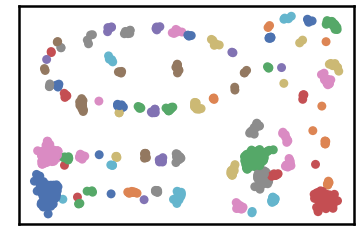
<div class="highlight-default notranslate"><div class="highlight"><pre><span></span><span class="n">itration</span> <span class="mi">600</span>
</pre></div>
</div>

<div class="highlight-default notranslate"><div class="highlight"><pre><span></span><span class="n">itration</span> <span class="mi">700</span>
</pre></div>
</div>

<div class="highlight-default notranslate"><div class="highlight"><pre><span></span><span class="n">itration</span> <span class="mi">800</span>
</pre></div>
</div>

<div class="highlight-default notranslate"><div class="highlight"><pre><span></span><span class="n">itration</span> <span class="mi">900</span>
</pre></div>
</div>
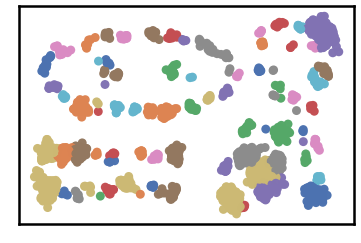
<div class="highlight-default notranslate"><div class="highlight"><pre><span></span><span class="n">itration</span> <span class="mi">1000</span>
</pre></div>
</div>
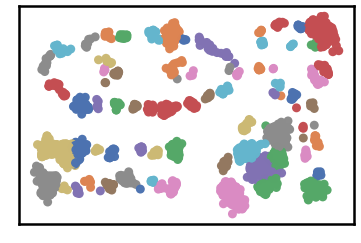
<div class="highlight-default notranslate"><div class="highlight"><pre><span></span><span class="n">itration</span> <span class="mi">1250</span>
</pre></div>
</div>

<div class="highlight-default notranslate"><div class="highlight"><pre><span></span><span class="n">itration</span> <span class="mi">1500</span>
</pre></div>
</div>

<div class="highlight-default notranslate"><div class="highlight"><pre><span></span><span class="n">itration</span> <span class="mi">1750</span>
</pre></div>
</div>
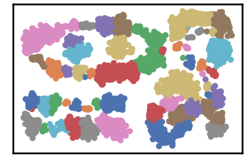
<div class="highlight-default notranslate"><div class="highlight"><pre><span></span><span class="n">itration</span> <span class="mi">2000</span>
</pre></div>
</div>
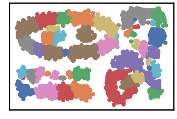
<div class="highlight-default notranslate"><div class="highlight"><pre><span></span><span class="n">itration</span> <span class="mi">2250</span>
</pre></div>
</div>
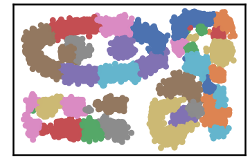
<div class="highlight-default notranslate"><div class="highlight"><pre><span></span><span class="n">itration</span> <span class="mi">2500</span>
</pre></div>
</div>
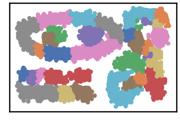
<div class="highlight-default notranslate"><div class="highlight"><pre><span></span><span class="n">itration</span> <span class="mi">2750</span>
</pre></div>
</div>
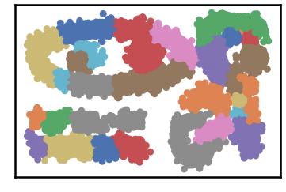
<div class="highlight-default notranslate"><div class="highlight"><pre><span></span><span class="n">itration</span> <span class="mi">3000</span>
</pre></div>
</div>
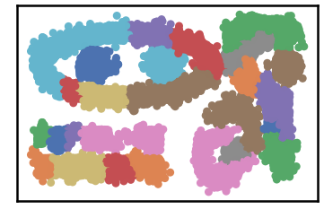
<div class="highlight-default notranslate"><div class="highlight"><pre><span></span><span class="n">itration</span> <span class="mi">3500</span>
</pre></div>
</div>

<div class="highlight-default notranslate"><div class="highlight"><pre><span></span><span class="n">itration</span> <span class="mi">4000</span>
</pre></div>
</div>
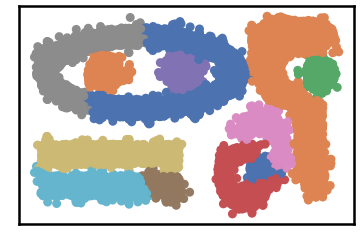
<div class="highlight-default notranslate"><div class="highlight"><pre><span></span><span class="n">itration</span> <span class="mi">4500</span>
</pre></div>
</div>
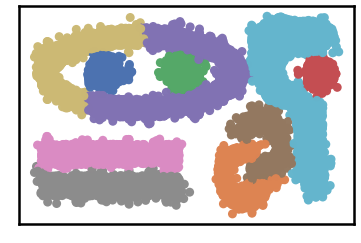
<div class="highlight-default notranslate"><div class="highlight"><pre><span></span><span class="n">itration</span> <span class="mi">5000</span>
</pre></div>
</div>

<div class="highlight-python notranslate"><div class="highlight"><pre><span></span><span class="kn">from</span> <span class="nn">PIL</span> <span class="kn">import</span> <span class="n">Image</span>

<span class="c1"># collect immages for each snapshot automatically by the algorithm in a folder named propagation</span>
<span class="n">images</span> <span class="o">=</span> <span class="p">[]</span>
<span class="n">prop_folder</span> <span class="o">=</span> <span class="s1">&#39;propagation&#39;</span>
<span class="n">img_files</span> <span class="o">=</span> <span class="n">os</span><span class="o">.</span><span class="n">listdir</span><span class="p">(</span><span class="n">prop_folder</span><span class="p">)</span>
<span class="n">img_files</span> <span class="o">=</span> <span class="p">[</span><span class="n">os</span><span class="o">.</span><span class="n">path</span><span class="o">.</span><span class="n">join</span><span class="p">(</span><span class="n">prop_folder</span><span class="p">,</span> <span class="n">f</span><span class="p">)</span> <span class="k">for</span> <span class="n">f</span> <span class="ow">in</span> <span class="n">img_files</span><span class="p">]</span>
<span class="n">sorted_files</span> <span class="o">=</span> <span class="nb">sorted</span> <span class="p">(</span><span class="n">img_files</span><span class="p">,</span> <span class="n">key</span><span class="o">=</span><span class="n">os</span><span class="o">.</span><span class="n">path</span><span class="o">.</span><span class="n">getmtime</span><span class="p">)</span>
<span class="k">for</span> <span class="n">filename</span> <span class="ow">in</span> <span class="n">sorted_files</span><span class="p">:</span>
  <span class="n">im</span> <span class="o">=</span> <span class="n">Image</span><span class="o">.</span><span class="n">open</span><span class="p">(</span><span class="n">filename</span><span class="p">)</span>
  <span class="n">images</span><span class="o">.</span><span class="n">append</span><span class="p">(</span><span class="n">im</span><span class="p">)</span>

<span class="c1"># create annimated gif to show evolution of the propagation</span>
<span class="n">images</span><span class="p">[</span><span class="mi">0</span><span class="p">]</span><span class="o">.</span><span class="n">save</span><span class="p">(</span><span class="s1">&#39;propagation.gif&#39;</span><span class="p">,</span> <span class="n">save_all</span><span class="o">=</span><span class="kc">True</span><span class="p">,</span> <span class="n">append_images</span><span class="o">=</span><span class="n">images</span><span class="p">[</span><span class="mi">1</span><span class="p">:],</span> <span class="n">optimize</span><span class="o">=</span><span class="kc">False</span><span class="p">,</span> <span class="n">duration</span><span class="o">=</span><span class="mi">800</span><span class="p">,</span> <span class="n">loop</span><span class="o">=</span><span class="mi">1</span><span class="p">)</span>
</pre></div>
</div>
</section>


           </div>
          </div>
          <footer><div class="rst-footer-buttons" role="navigation" aria-label="Footer">
        <a href="clustering_propagation.html" class="btn btn-neutral float-left" title="Clustering Propagation" accesskey="p" rel="prev"><span class="fa fa-arrow-circle-left" aria-hidden="true"></span> Previous</a>
        <a href="scalability_and_speed.html" class="btn btn-neutral float-right" title="Scalability" accesskey="n" rel="next">Next <span class="fa fa-arrow-circle-right" aria-hidden="true"></span></a>
    </div>

  <hr/>

  <div role="contentinfo">
    <p>&#169; Copyright 2021, Mohamed Abbas.</p>
  </div>

  Built with <a href="https://www.sphinx-doc.org/">Sphinx</a> using a
    <a href="https://github.com/readthedocs/sphinx_rtd_theme">theme</a>
    provided by <a href="https://readthedocs.org">Read the Docs</a>.
   

</footer>
        </div>
      </div>
    </section>
  </div>
  <script>
      jQuery(function () {
          SphinxRtdTheme.Navigation.enable(true);
      });
  </script> 

</body>
</html>